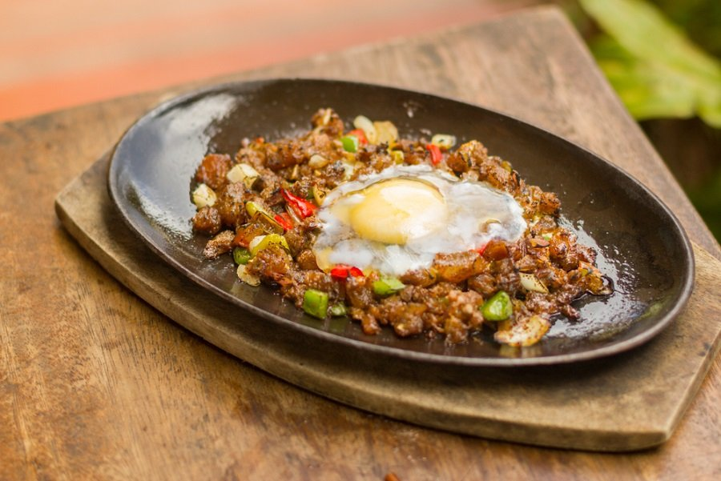

Filipino dishes are unique as it draws inspiration from several influences. Our food reflects the Spanish, Japanese, Chinese, Western and Pacific Islander flavors developed during our many years of colonization. Letting each flavor have its own way without having to blend together and yet resulting to dishes that have that salty, sweet and tangy taste. Filipino dishes are very colorful combined with vegetables, seafood, lean meat and many more. It's like having a full and colorful sensory experience with each meal.
AdoboNo list of Filipino food would be complete without adobo. This ever-present dish in the Philippines is what balikbayans always miss and is a safe choice to introduce Philippines food to foreigners. The meat (chicken, pork, or lamb) is marinated in vinegar, salt, garlic, pepper, soy sauce and other spices which is a practical way to preserve the food without refrigeration.
LEARN MOREBulaloWhen the weather becomes cooler, Filipinos usually crave a hot stewed meal— bulalo. Bulalo is made by slow-cooking beef shanks and bone marrow. Like sinigang, it also has a mix of vegetables along with the beef. The most famous place to eat bulalo in the Philippines is Batangas and Tagaytay. Some Filipinos who live in the metro will drive up north just to have that bulalo fix.
LEARN MORE
Chicken InasalThis dish is basically a grilled chicken but this is not the ordinary grilled chicken you’ll see everywhere. If you want to taste the authentic chicken inasal, you should go to Bacolod. It’s where the dish originated. They marinate the chicken soy sauce, vinegar, and different spices that make Bacolod chicken inasal unique. They also use chicken oil to pair with rice.
LEARN MORE
Crispy PataJust like lechon, crispy pata is a delicious and must-try Philippines food. Crispy Pata is the pig’s whole leg deep-fried into perfection to achieve the right crispiness. It is served with a soy-vinegar dipping sauce on the side with some chopped up garlic and chilli.
LEARN MOREKansiIf you love sinigang and bulalo, you’ll definitely love Kansi, too! Kansi is an Ilonggo dish which is a combination of sinigang and bulalo. But the sour taste overpowers the soup. The meat is the same as bulalo using beef shank and bone marrow. Kansi is one of the must-try Filipino dishes in the Philippines!
LEARN MOREKare-kareKare-kare is one of the most favorite Filipino dishes of Pinoys. The stew is made with peanut butter and grounded rice. It has oxtail and mixed vegetables. Kare-kare is best eaten with rice and bagoong (shrimp paste).
LEARN MORELechonThis is a famous Filipino food not just to Pinoys but also to foreigners. Lechon is a whole roasted pig usually served on special occasions. It’s kind of expensive that’s why when you see lechon on an occasion, it must be grand. What people love about lechon is its crispy skin and juicy meat which is best paired with liver sauce. Anthony Bourdain claimed that this is the best pig ever! He wouldn’t say this for nothing right? The famous Filipino restaurant that serves one of the best lechons is Rico’s Lechon.
LEARN MORESinigangIf we were to describe the taste of Filipino cuisine, it would have to be mostly sour rather than spicy. And sinigang serves you that. This Pinoy classic consists of a delicious broth soured by tamarind, tomatoes, and sometimes, kamias. Aside from the meat, sinigang has different vegetables. Popular variants are pork sinigang, beef sinigang, prawns sinigang.
LEARN MORESisigThe sisig meat is primarily chopped up parts of the pigs’ face— Filipinos don’t waste anything when it comes to food that’s why no cut of the animal goes to waste. Some sisig recipes have mayonnaise and raw egg to be mixed in while hot and give it a creamier texture. While other sisig recipes don’t have raw egg and are crispier than the usual recipe. This is served sizzling on a hot stone plate and is a favorite pulutan (food that perfectly matches with beer) among Filipinos. The best Filipino restaurant that serves sisig is Manam. It has several branches in Metro Manila.
LEARN MORESumanRice cake is one of the most distinct foods in Asia because of our rice-growing agriculture. And when in the Philippines, you’ll see different kinds of rice cakes everywhere and one famous kakanin is the suman. It is usually cooked in coconut milk and seasoned with a little sugar and salt for flavor, and are typically steamed in banana or palm leaves. It’s a common dessert or snack that can be found in different parts of the Philippines, with different versions using various ingredients.
LEARN MOREFernando, C. (2020). A Taste of Filipino Food: 10 Pinoy Dishes That Will Have You Drooling. Retrieved Januarry 18, 2022 from https://www.zenrooms.com/blog/post/filipino-food/
Panlasang Pinoy (2021). Panlasang Pinoy. Retrieved Januarry 18, 2022 from https://panlasangpinoy.com/